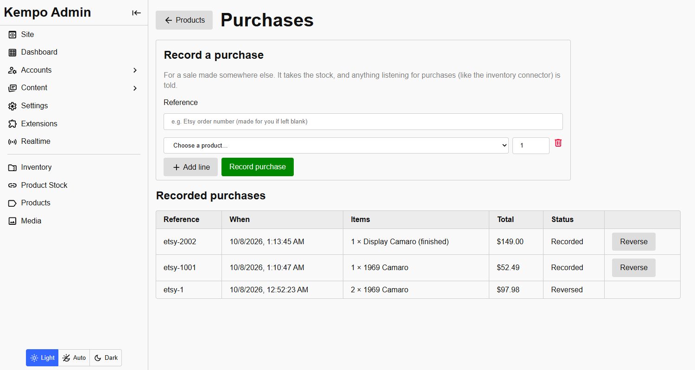
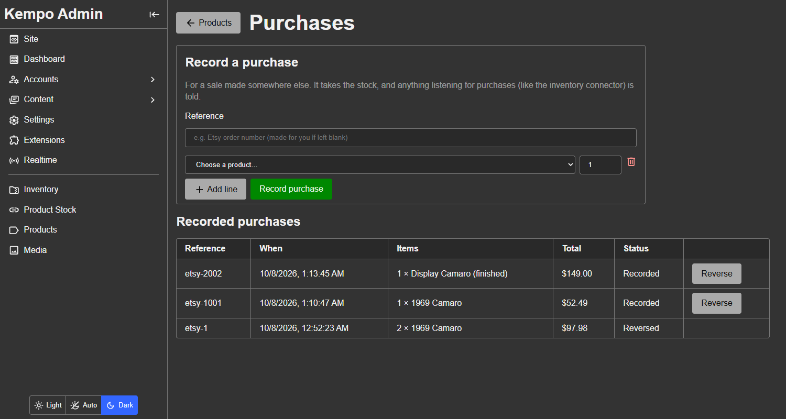

Purchases and stock
This extension does not take orders. Whoever does, whether that is a checkout extension, the admin form for sales made on Etsy or in person, or another extension, tells products that something was purchased. Products then prices the lines, takes the stock, and lets every other extension know.
Recording a purchase
import { recordPurchase } from 'kempo-products/sdk';
const [error, purchase] = await recordPurchase({
ref: 'order-1042',
lines: [
{ productId: '9f2c1e0a44b7d3a1', quantity: 2, options: { color: 'red', 'clear-coat': 'no' } },
],
});refis the caller's own reference for the order. Recording the same one twice is refused, so a retry can never take stock twice, and it is how a purchase is found later.- Every line is checked: the product is published, available, in stock and priced, and the options are real and in stock. A failure says which product and why.
- The price of each line is worked out here from the catalog, never taken from the caller. A purchase records what was charged, with the names and option labels as they were then, so it still reads correctly after the product changes or is deleted.
- Stock for every line is taken in one transaction: all of it or none of it. Two lines for one product share that product's stock. Unlimited stock is never taken.
Then kempo-products:purchase:recorded fires with the purchase. That is how other extensions react: the inventory connector uses it to take the materials out of inventory. Nothing a listener does can undo the purchase.
Reversing a purchase
import { reversePurchase } from 'kempo-products/sdk';
await reversePurchase('order-1042');For a cancelled or refunded order. It puts finite stock back, marks the purchase reversed, and fires kempo-products:purchase:reversed. A purchase can only be reversed once, a product deleted since is skipped, and a reversed reference cannot be recorded again.
Sales made elsewhere
Under Products > Purchases a person can record a sale made on Etsy, in person, or over the phone, and reverse one. It does the same as above, so stock and anything listening stay right, with two differences that only apply to this form:
- A product that has no price (a "call for price" item) can be given a price on the line.
- The product need not be published or marked available. You are recording something that already happened.


Recording a sale made elsewhere, and the purchases recorded so far. A reversed purchase (the last row) cannot be reversed again.Code that records a purchase (for example a checkout) is never given either of these. It gets the catalog's price and the catalog's rules.
Managed stock
An extension that keeps a product's stock in step with something else, such as inventory, declares that, and people then see the stock and which choices are in stock as read-only, with the extension's name:
import { setManagedBy, setStock, setChoiceAvailability } from 'kempo-products/sdk';
await setManagedBy(productId, 'my-extension');
await setStock(productId, 7, { actor: 'my-extension' });
await setChoiceAvailability(productId, 'color', 'red', false, { actor: 'my-extension' });Anyone else who tries to change a managed product's stock, through the admin or the SDK, is refused. Pass '' to setManagedBy to hand it back to people.
Whenever a product's stock changes, kempo-products:product:stock_changed fires with the previous and new stock.
kempo-products is open source under the MIT license. View it on GitHub, or report a problem.